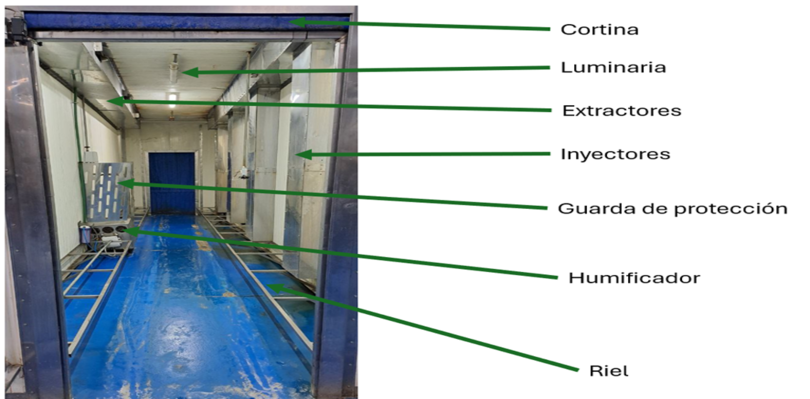

Dentro de los equipos de fermentación los podemos dividir en dos, ambos
sirven para lo mismo, pero para productos diferentes: Túneles de:
Tuneles de Fermentación (Pan de muerto).
Cámaras de Fermentación Isopan (Pan Danés; cuerno, bigote, rol).
Es una máquina que permite controlar la temperatura y la humedad de su
interior y, así, agilizar el proceso de fermentación de diferentes
alimentos. La fermentación es un proceso natural que ocurre cuando
ciertas bacterias o levaduras descomponen los azúcares de los alimentos
sin necesidad de oxígeno. A mayor temperatura menor humedad y a menor
temperatura mayor humedad, considerando que puede ser variable ya que
cada producto puede absorber de forma distinta la humedad.
Seguridad e Higiene
Para operar esta máquina, es fundamental seguir las normas de seguridad
e higiene mencionadas anteriormente. A continuación, se muestra una
lista de recomendaciones:
Túneles de Fermentación
Riesgo eléctrico: Maquinaria a 440v y uso alto del Display.
Superficie caliente: Estructura caliente.
Piso resbaloso: Exceso de humedad.
Cámaras de Fermentación Isopan
Riesgo eléctrico: Maquinaria a 440v y uso alto del Display.
Superficie caliente: Estructura caliente.
Anomalías y posibles causas de fallas
Túneles de Fermentación
Algunas anomalías comúnes en la operación de los Túneles de Fermentación
son:
Perdida de humedad por daño en ultrasónicos, ventiladores y cortinas.
Perdida de temperatura por daño en resistencias
Bloqueo temporal de maquina por daño en botoneras y/o tablero de
control.
Descarga eléctrica a operador por corto circuito (por exceso de
humedad).
Cámaras de Fermentación
Algunas anomalías comúnes en la operación de la Cámara de Fermentación
Isopan son:
Perdida de humedad por daño en seguro de puerta.
Perdida de temperatura por daño en resistencias.
Existencia de Maquinaria en Planta
Túneles de Fermentación: Se cuentan con 5 túneles divididos en Zona A
y Zona C.
Cámaras de Ferementación Isopan: Se cuentan con dos cámaras en Zona A.
Túneles de Fermentación Zona A
Túnel de Fermentación 1A (A-TUNF1)
Túnel de Fermentación 2A (A-TUNF2)
Túneles de Fermentación Zona C
Túnel de Fermentación 3C (C-TUNF3)
Túnel de Fermentación 4C (C-TUNF4)
Túnel de Fermentación 5C (C-TUNF5)
Cámaras de Fermentación Zona A
Cámara de Fermentación Isopan 1A (A-CAMF1)
Cámara de Fermentación Isopan 2A (A-CAMF2)
Túneles de Fermentación: La capacidad de cada túnel es de
15 carros (80cmx60cm) o
14 carros (90cmx70cm), considerando un mínimo de 3
carros. La carga de cada carro será variable con relación a las
características del producto, teniendo como resultado el nivel de
condensación.
Cámaras de Ferementación Isopan: La capacidad de cada cámara es de
4 carros (de 90cmx70cm o 80x60cm), considerando un
mínimo de 1 carro. La carga de cada carro será variable con relación a
las características del producto, teniendo como resultado el nivel de
condensación.
Arranque de turno, Operación continua de producción y Fin de turno
Nota: En estos equipos, únicamente se dispone de
videos de apoyo para el uso adecuado, ya que los procesos de arranque y
limpieza operativa están en proceso de reestructuración.
Partes / Componentes
A continuación se mostrarán las partes, componentes y tableros de los
Túneles de Fermentación y Cámaras de Fermentación Isopan.
Túneles de Fermentación

Partes y Componentes Túneles de Fermentación
Partes y Controles Túneles de Fermentación
Cámaras de Fermentación Isopan
Partes y Componentes Cámaras de Fermentación
Partes y Controles Cámaras de Fermentación
Inicio de turno: Puntos a validar en el arranque
Puntos clave a validar antes de iniciar el turno:
Túneles de Fermentación
Se procede a inspeccionar estado de
cortinas dentro del riel para que suban y bajen correctamente.
Se dejan arriba (abiertas las
cortinas) para el encendido de luminaria dentro del túnel y se coloca
paro de emergencia.
Se revisa nivel de agua de ultrasónicos
(humificadores), 1 cm arriba del detector de nivel.
Se inspecciona limpieza de componentes de
humificador.
Se revisa el estado de botoneras.
Finalmente se retira el paro de emergencia
y se configuran los parámetros con base en el producto a ingresar.
Cámaras de Fermentación Isopan
Se inspeccionan las puertas y sus
empaques de sellado.
Se revisa el seguro mecánico de la puerta.
Se verifica el estado del generador
de vapor y calor, asegurando que no haya fugas en las tuberías.
Se revisa el estado del tablero de
control.
Operación de maquinaria. Uso adecuado
Estos puntos son críticos para un buen uso de los equipos.
Túneles de Fermentación
Se ajustan los parámetros de
temperatura y humedad de los túneles.
El equipo debe estar cerrado para evitar
pérdida de temperatura y humedad.
Se espera a que se lleguen los valores
establecidos para ingresar los carros.
Respetar el límite de carros.
Verificar que las cortinas estén
dentro de su posición para evitar un accidente.
Solo se puede abrir una
cortina a la vez, no se puede abrir entrada y salida al mismo tiempo.
Video de apoyo de uso de los Túneles de Fermentación:
Cámaras de Fermentación Isopan
Se ajustan los parámetros de
temperatura y humedad de las cámaras.
El equipo debe estar cerrado para evitar
pérdida de temperatura y humedad.
Se espera a que se lleguen los valores
establecidos para ingresar los carros.
Respetar el límite de carros.
Video de apoyo de uso de las Cámaras de Fermentación Isopan:
Fin de turno / Limpieza operativa
Túneles de Fermentación
Para realizar la limpieza operativa del túnel de fermentación, se
requiere de 1 persona en un tiempo estimado de 30 minutos.
Cámaras de Fermentación Isopan
Para realizar la limpieza operativa de la cámara de fermentación, se
requiere de 1 persona en un tiempo estimado de 15 minutos.
Limpieza profunda
Esta limpieza es realizada por el área de servicios.